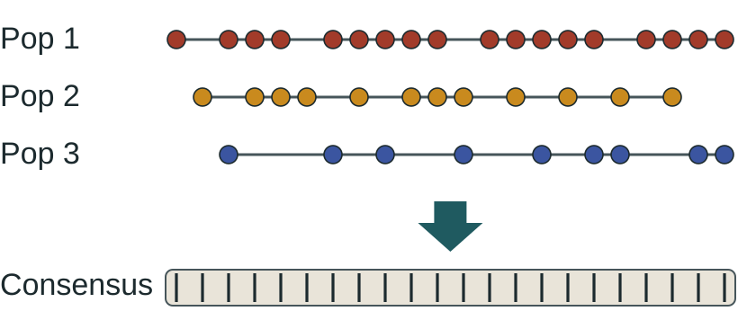
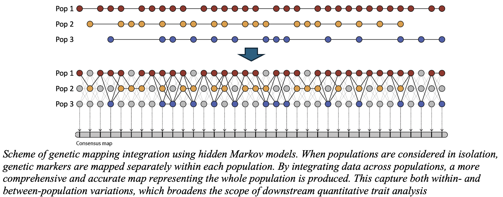
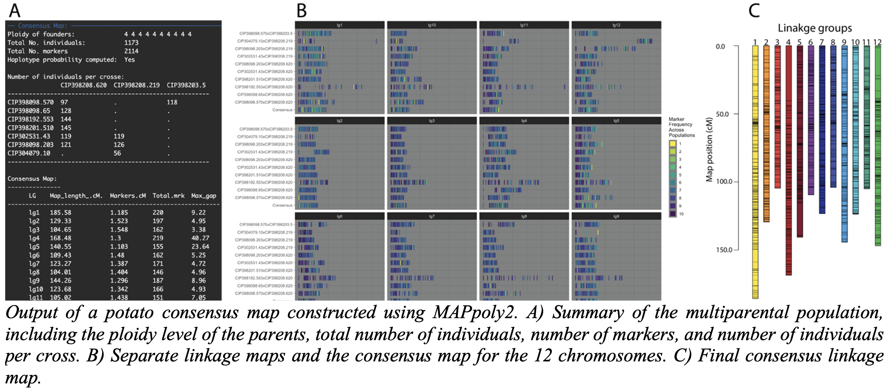

Genetic mapping · Polyploids
Multi-family linkage maps in polyploids
Breeding programs often work with several related crosses. MAPpoly2 combines information across interconnected diploid and autopolyploid families to build integrated linkage maps. It extends the single-family models in MAPpoly.
MAPpoly2 on GitHub MAPpoly method (G3, 2019)
Creator of MAPpoly and MAPpoly2.

How MAPpoly2 builds the map
A hidden Markov model builds a map for each parent. These are combined into a joint map, which is then recomputed to place the remaining markers. Ploidy levels 2, 4, and 6 can be combined in any configuration, and the computationally intensive steps are written in C++.

Example output: a potato consensus map
